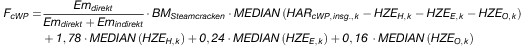

(Fundstelle: BGBl. I 2011, 1938- 1939)
Teil 1
Zuteilung für Steamcracking-Prozesse nach § 12
Die vorläufige jährliche Anzahl Berechtigungen, die einem Zuteilungselement mit Produkt-Emissionswert für die Herstellung chemischer Wertprodukte zuzuteilen sind, berechnet sich nach folgender Formel:

Erläuterung der Abkürzungen
- FcWP
vorläufige jährliche Zuteilung für ein Zuteilungselement, das die Produktion von chemischen Wertprodukten durch Steamcracken abbildet, in Anzahl Berechtigungen;
- BMSteamcracken
Produkt-Emissionswert für Steamcracken;
- Emdirekt
direkte Emissionen nach Maßgabe von § 15 Absatz 4. Die in den direkten Emissionen enthaltenen Emissionen aus allen Nettoimporten messbarer Wärme werden nach § 15 Absatz 3 berechnet;
- Emindirekt
indirekte Emissionen aus dem Verbrauch von Strom innerhalb der Systemgrenzen des Steamcrackens während des gewählten Bezugszeitraums, berechnet anhand des Emissionsfaktors nach § 15 Absatz 2;
- HARcWP,insg.,k
historische Aktivitätsrate für die Gesamtproduktion an chemischen Wertprodukten im Jahr k des gewählten Bezugszeitraums, ausgedrückt in Tonnen chemische Wertprodukte;
- HZEH,k
historische Wasserstoff-Produktion aus zusätzlichen Einsatzstoffen im Jahr k des gewählten Bezugszeitraums, ausgedrückt in Tonnen Wasserstoff;
- HZEE,k
historische Ethen-Produktion aus zusätzlichen Einsatzstoffen im Jahr k des gewählten Bezugszeitraums, ausgedrückt in Tonnen Ethen;
- HZEO,k
historische Produktion anderer chemischer Wertprodukte aus zusätzlichen Einsatzstoffen im Jahr k des gewählten Bezugszeitraums, ausgedrückt in Tonnen anderer chemischer Wertprodukte, hier als Summe der Massen von Ethin, Propen, Butadien und Benzol.
Teil 2
Zuteilung für Vinylchlorid-Monomer nach § 13
Die vorläufige jährliche Anzahl Berechtigungen, die einem Zuteilungselement mit Produkt-Emissionswert für die Herstellung von Vinylchlorid-Monomer zuzuteilen sind, berechnet sich nach folgender Formel:
Erläuterung der Abkürzungen
- FVCM
vorläufige jährliche Zuteilung für die Produktion von Vinylchlorid-Monomer, in Anzahl Berechtigungen;
- BMVCM
Produkt-Emissionswert für Vinylchlorid-Monomer;
- HARVCM
historische Aktivitätsrate für die Produktion von Vinylchlorid-Monomer als Median der jährlichen Produktionsmengen während des jeweiligen Bezugszeitraums, ausgedrückt in Tonnen Vinylchlorid (Chlorethylen);
- Emdirekt
historische direkte Emissionen nach Maßgabe von § 15 Absatz 4 aus der Produktion von Vinylchlorid-Monomer, einschließlich Emissionen aus dem Nettowärmeimport während des jeweiligen Bezugszeitraums, ausgedrückt in Tonnen Kohlendioxid-Äquivalent; die in den direkten Emissionen enthaltenen Emissionen aus allen Nettoimporten messbarer Wärme berechnen sich nach § 15 Absatz 3;
- EmWasserstoff
historische virtuelle Emissionen aus der Verbrennung von Wasserstoff zur Produktion von Vinylchlorid-Monomer während des jeweiligen Bezugszeitraums, berechnet als historischer Wasserstoffverbrauch multipliziert mit 56,1 Tonnen Kohlendioxid pro Terajoule, ausgedrückt in Tonnen Kohlendioxid-Äquivalent.
Teil 3
Zuordnung der Eingangsströme und Emissionen
bei der Erzeugung von Wärme in Kraft-Wärme-Kopplung
- 1.
Für die Zuordnung der Eingangsströme und Emissionen bei der Erzeugung von Wärme in Kraft-Wärme-Kopplung auf die in gekoppelter Produktion hergestellten Produkte ist folgende Formel maßgeblich:
Erläuterung der Abkürzungen
- EQ
die auf die in gekoppelter Erzeugung von Wärme entfallende Emissionsmenge in Tonnen Kohlendioxid-Äquivalente oder die auf die in gekoppelter Erzeugung von Wärme entfallenden Stoffströme, bezogen auf ein Zuteilungselement;
- ŋQ
Wirkungsgrad der Wärmeerzeugung in gekoppelter Wärmeproduktion;
- ŋQ,ref
Referenzwirkungsgrad der Wärmeerzeugung in gekoppelter Wärmeproduktion;
- ŋel
Wirkungsgrad der Stromproduktion in gekoppelter Stromerzeugung;
- ŋel,ref
Referenzwirkungsgrad der Stromproduktion in gekoppelter Stromerzeugung;
- EKWK
die auf die in gekoppelter Erzeugung von elektrischer und thermischer Energie entfallende Emissionsmenge in Tonnen Kohlendioxid-Äquivalente oder die auf die in gekoppelter Erzeugung von elektrischer und thermischer Energie entfallenden Stoffströme.
- 2.
Zur Anwendung der Formel nach Nummer 1 sind die Wirkungsgrade für die Strom- und Wärmeproduktion entweder aus den Auslegungsparametern der Anlage anzugeben oder durch verifizierte Messungen zu ermitteln; alternativ zur Angabe der Wirkungsgrade können auch die Nutzungsgrade angegeben werden.
Für die Ermittlung der Wirkungsgrade durch verifizierte Messungen sind folgende Formeln maßgeblich:
Erläuterung der Abkürzungen
- QW
die auf die in gekoppelter Erzeugung von elektrischer und thermischer Energie entfallende Wärmemenge, ausgedrückt in Gigajoule;
- QBr
die für die gekoppelte Erzeugung von elektrischer und thermischer Energie benötigte Brennstoffmenge, ausgedrückt in Gigajoule;
- Qel
die auf die in gekoppelter Erzeugung von elektrischer und thermischer Energie entfallende Strommenge, ausgedrückt in Gigajoule.
Sofern diese Angaben nicht vorliegen oder nicht ermittelt werden können, ist für
ŋQ ein Wert von 0,7, für
ŋel ein Wert von 0,525 anzunehmen.
- 3.
Zur Anwendung der Formel nach Nummer 1 gelten für
ŋQ,ref und
ŋel,ref die folgenden Referenzwirkungsgrad-Werte der getrennten Strom- und Wärmeerzeugung:
| | Steinkohle, Koks und sonstige feste
Brennstoffe | Braunkohle,
Braunkohlebriketts | Gasöl, Heizöl, Flüssiggas und sonstige flüssige Brennstoffe | Erdgas und weitere
gasförmige Brennstoffe |
|---|
| Strom | 44,2 % | 41,8 % | 44,2 % | 52,5 % |
| Wärme | 88 % | 86 % | 89 % | 90 % |
Werden in einem Zuteilungselement mehrere Brennstoffe eingesetzt, so ist ein Mischwert für den Referenzwirkungsgrad auf Basis einer Gewichtung nach Brennstoffenergie zu bilden.
- 4.
Zusätzliche Angaben im Zuteilungsantrag
Soweit Regelungen dieser Verordnung auf diesen Teil des Anhangs 1 verweisen, sind im Zuteilungsantrag folgende Angaben zu den Verbrennungseinheiten der Anlage zusätzlich erforderlich:
- a)
die Bezeichnung der Verbrennungseinheit,
- b)
die Feuerungswärmeleistung zum Zeitpunkt der Antragstellung,
- c)
die zugehörigen Zuteilungselemente,
- d)
Veränderungen der Angaben zu den Buchstaben a bis c in den Kalenderjahren 2005 bis 2010.